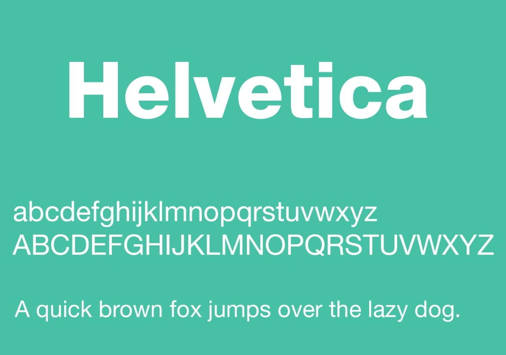
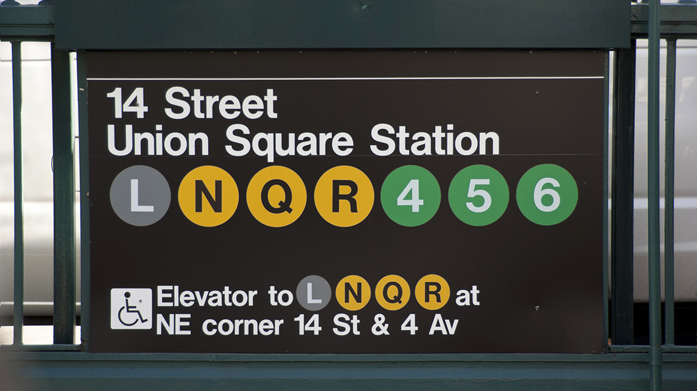
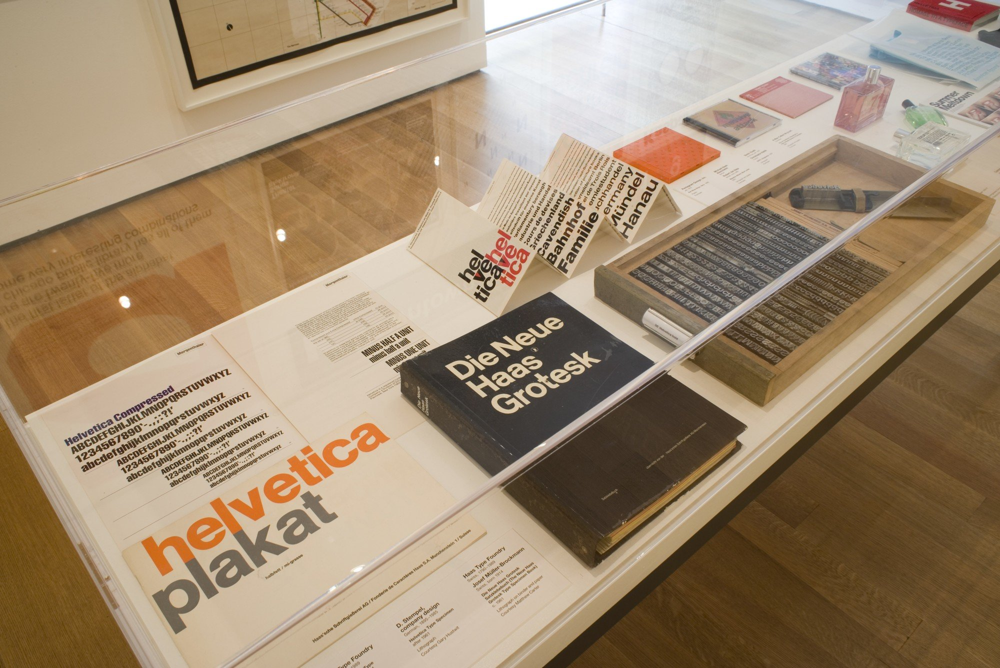
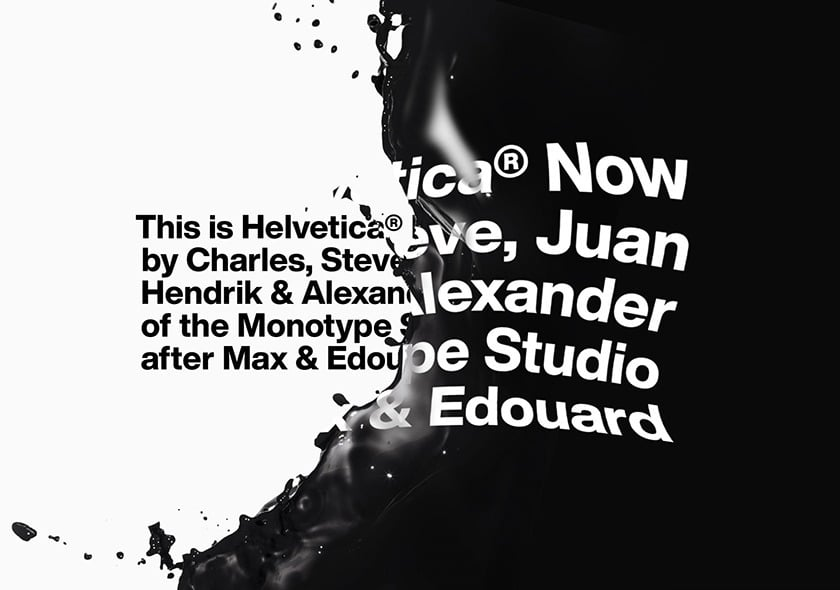

history
-

1957
In 1957, Miedinger came up with a new set of characters, which he named Neue Haas Grotesk. It was a sans serif font with a linear, simple and elegant design, and this no-frills look meant it was extremely legible.
-

1960
In 1959, Mike Parker was appointed director of the Mergenthaler Linotype Company, an American firm that sold Linotype typewriters, the first machines to automatically assemble rows of characters. Parker was given the task of expanding the font library owned by the company, and between 1959 and 1981 he managed to add almost 1,000, in many cases adapting pre-existing fonts to suit the technical demands of the Linotype machines.
In 1960, Parker decided to adopt Neue Haas Grotesk, and asked Arthur Ritzel, a designer from D. Stempel AG - a German firm that worked in partnership with the Lynotype Company - to redesign and develop the family of fonts. This new font was renamed Helvetica.
-

1960s-1970s
The font instantly became an icon of Swiss design, which at the time was seen to epitomise understated elegance and functionality, and throughout the 1960s and 1970s it appeared on numerous advertising posters and billboards across Europe and the USA.
-

late 1960s
Towards the end of the 1960s, Helvetica was chosen by the designers Massimo Vignelli and Bob Noorda to create the new signage for the New York Metro and the Graphic Standards Manual, one of the most famous visual identity manuals in the history of graphic design. The font remained one of Vignelli's trademark features, significantly boosting Helvetica's international renown.
-
1983
1983 saw the release of Neue Helvetica, an updated version of the font created by Linotype's graphic design studio, with extra spacing between the numbers and heavier punctuation marks to improve legibility.
-
1984
The following year, Steve Jobs decided to include it in the fonts available on the first Macintosh, paving the way for the spread of the digital version of the typeface.
-

2007
In 2007, on the 50th anniversary of its invention, the font starred in a documentary film entitled 'Helvetica' directed by Gary Hustwit. That same year it was also given its own exhibition, '50 years of Helvetica', at the Museum of Modern Art in New York.
-

2019
In 2019, Monotype Studio commissioned a restyling of the font, the most radical update since the now distant 1983.
Helvetica Now is available in three different versions: Micro for small screens, Text for normal text and Display for larger formats. Each size comes in 48 different weights, from a thin line to extra black. The shapes of the characters appear better spaced and more legible, even on small electronic devices.